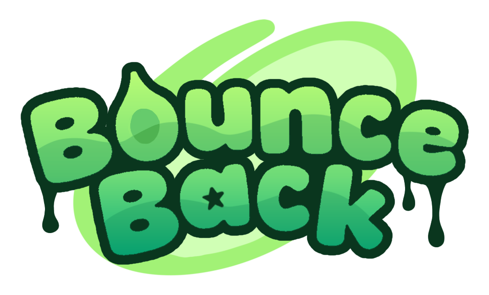

• Sean Bermingham •
Games Programmer & Solo Game Developer
Graduating May 2027 · Award-winning developer
Games Programmer & Solo Game Developer
Graduating May 2027 · Award-winning developer
I'm a skilled games programmer who is also experienced with design and art workflows. I have experience both undertaking projects independently and working in a team of students to create a product for a client. I would be a great fit for teams looking for a passionate colleague with a significant breadth and depth of experience.

An in-development 2d platformer made in Godot. Built solo over the summer of 2026, this was my submission to the Gamebridge festival where it won an award out of over 200 submissions: runner-up in design excellence.
Implemented responsive platforming controls with coyote time, input buffering and frame-rate-independent movement. Developed modular state machine architecture to handle all aspects of character movement, including additional states such as dashing and climbing. Applied the architecture across the project, including enemy movement systems and character animation systems.
Designed and built a polished user interface to control game settings. Implemented an input system that separates gameplay actions from physical inputs, allowing controls to be easily remapped to different keys and buttons.
Implemented automatic save/load functionality that writes player data to internal storage and later reads it. Data is serialized into JSON for storage and deserialized when loading, allowing settings and progress to be restored between sessions.
Designed and iterated on several levels to come to a polished final product. Through creating my own art and audio assets, I became familiar with several different development pipelines and honed my creative skills.
Gameplay Programmer and Audio Designer
Over one semester I worked in a team of 8 other students from various disciplines to create this 2d puzzle-platformer.
Designed a sequential modular cutscene system that allows for the creation of custom cutscenes. Functions for common actions such as moving characters and waiting were provided so designers could easily script and iterate on cutscenes.
Implemented a two player character controller in which both players use the same keyboard to control different characters.
📧 sbermingham1@outlook.com